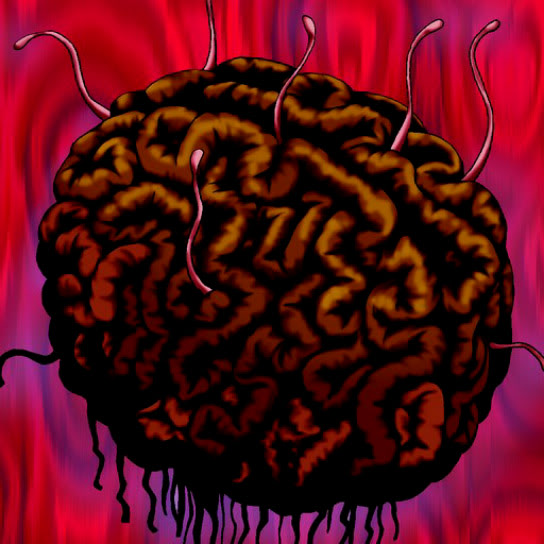

Tainted Wisdom

Description: "While this card is face-up in the defense position, a card's CLASS effects during battle can be identified even if the card is face-down."
STATS
ATK: 1250
DEF: 800
DECK COST
Deck Cost per Card: 26
EFFECT NOT IMPLEMENTED